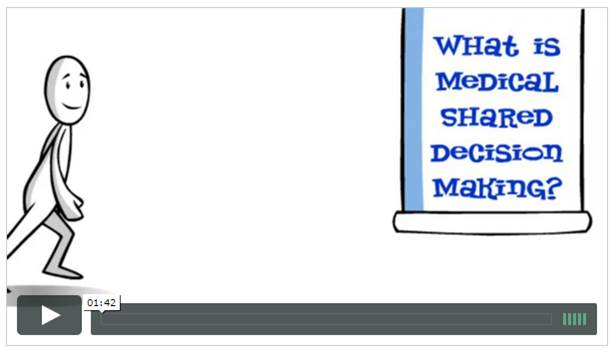

| ||||
Shared Decision Making SummitShared Decision MakingShared decision making (SDM) is a collaborative process that allows patients and their providers to make health care decisions together, taking into account the best scientific evidence available, as well as the patient's values and preferences. About the SummitThe Summit is different than a standard conference. While Shared Decision Making is the overarching theme, rather than a micro-focus on the interactions between patients and their health care providers, the Summit takes a macro-focus of how to enable and support SDM broadly, across all of healthcare. Our objective to enable and support the widespread adoption of Shared Decision Making, creating a "win" for everyone. We recognize the power that a group of organizations can collectively wield in breaking down barriers and building bridges. A mix of brainstorming, defining, structuring, and prioritizing, the target outputs of the Summit are ideas that are ready for project initiation. For answers to questions about the Summit, please contact info@sdmsummit.org. OccurrencesThe inaugural Summit was in 2016; future Summits will occur annually beginning in 2018. The Summit is hosted by the Society of Decision Professionals (SDP), in partnership with the Society for Medical Decision Making (SMDM). For more than a decade, SMDM has brought together researchers that have defined and progressed the field of Shared Decision Making. As a practice-oriented society, SDP has a strong relationship industry, including many of the sentinel figures in decision theory, science, and application.
| ||||